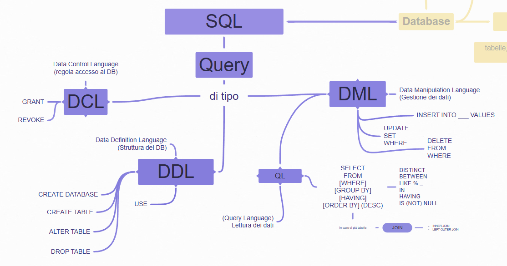
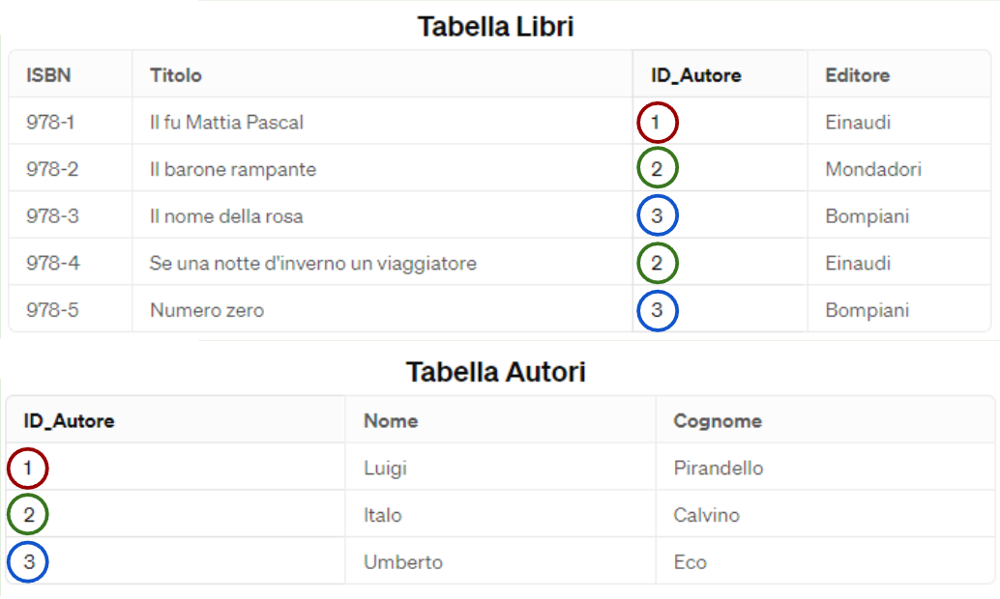

Capitolo 5: SQL¶

Definizione
Le informazioni su SQL contenute in questo libro sono ancora parziali.
Per completezza fare riferimento alle ottime slide dell'università di Bologna disponibili a seguire:
Slide 1: query di base: SELECT su una tabella, inserimento, modifica, eliminazione dati. Creazione tabella, vincoli.
Slide 2: query SELECT su più tabelle: la clausola JOIN
Slide 3: Funzioni di aggregazione (MAX,MIN..) , raggruppamento (GROUP BY e HAVING) e viste.
Definizione
SQL (Structured Query Language) è un linguaggio utilizzato per comunicare con i database relazionali
SQL si pronuncia nominando le tre lettere ("Essecuelle" in italiano, "Ess-Cue-Ell" in inglese), è diffusa anche la pronuncia non-standard "Siquel".
Il linguaggio SQL è riconosciuto dalla maggior parte dei DBMS relazionali, anche se possono esserci delle leggere differenze (si parla di dialetti).
Curiosità: Esistono altre tipologie di database che lavorano con un linguaggio diverso. Sono detti linguaggi NoSQL. Non verranno trattati in questo testo
Definizione
In SQL ogni richiesta, o interrogazione, che facciamo al database si chiama query.
Le parole chiave del linguaggio vengono solitamente chiamate clausole.
Le possibili query sono di inserimento, modifica, eliminazione, selezione dati, ecc…
Sintassi - Le query in SQL
Le query in SQL:
-
Non sono case-sensitive
non distinguono maiuscole e minuscole. Scriveremo sempre i comandi di SQL in maiuscolo per facilità di lettura -
Non distinguono quando andiamo a capo
Volendo potremmo scrivere query in una sola riga. Scriveremo query su più righe con una forma specifica per facilità di lettura -
Terminano con un punto e virgola
In fondo ad una query SQL dobbiamo sempre inserire il punto e virgola per informare l'interprete che abbiamo terminato la nostra query.
Commenti:
In SQL vengono accettati due tipi di commento:
-
quello su una sola linea, preceduto da due trattini -- e uno spazio;
-
quello su più linee, anticipato da /* (sulla linea di inizio) e seguito da */ sulla linea di fine
Esempio:
-- Esempio di commento in una linea all'interno di una query
SELECT
FROM libri
WHERE anno=2010;
/* esempio di commento su più linee.
Questo commento termina
soltanto quando lo chiudiamo */
Le categorie di istruzioni SQL¶
Nei database relazionali, ci sono tre categorie principali di query SQL, ognuna delle quali ha un ruolo specifico:
-
DDL (Data Definition Language) si occupa della definizione e della struttura dei dati, inclusa la creazione e la modifica di tabelle e oggetti di definizione dei dati.
-
DML (Data Manipulation Language) si concentra sulla manipolazione dei dati, come l'inserimento, l'aggiornamento, l'eliminazione e il recupero dei dati da tabelle.
-
DCL (Data Control Language) gestisce le autorizzazioni degli utenti e il controllo dell'accesso ai dati.
DDL (Data Definition Language):¶
Definizione
I comandi DDL sono quelli che servono per definire la struttura del database.
Con questi comandi creiamo, modifichiamo, eliminiamo database e tabelle.
Le query che appartengono a questa categoria sono:
Query di gestione database
-
CREATE DATABASE - Creazione database
-
USE - Selezione del database
-
DROP DATABASE - Eliminazione database
Query di gestione tabelle
-
CREATE TABLE - Creazione tabella
-
ALTER TABLE - Modifica struttura tabella
-
DROP TABLE - Eliminazione tabella
Operazioni su database¶
Sintassi - Creare un database
Creare un database
La query per creare un database è molto semplice:
CREATE DATABASE nomedatabase;
dove nome_database è il nome che vogliamo dare al db.
Se ad esempio volessi creare un database dal nome dbscuola scriverei
CREATE DATABASE dbscuola;
```</th>
</tr>
</thead>
<tbody>
</tbody>
</table>
!!! abstract "Definizione"
**Entrare nel database**
Per entrare nel database si utilizza la clausola USE
```sql
USE nomedatabase;
```</th>
</tr>
<tr class="odd">
<th></th>
<th><p><strong>Eliminare un database</strong><br />
Per eliminare completamente un database si utilizza la query DROP DATABASE</p>
```sql
DROP DATABASE nomedatabase;
Cautela nell'utilizzare le query di eliminazione! Se la eseguite per sbaglio rischiate di perdere tutti i dati!
Operazioni su tabella¶
Creazione di una tabella¶
Sintassi
Per creare una tabella la sintassi generica è
CREATE TABLE nometabella (
nome_colonna1 tipo_dato1 vincoli,
nome_colonna2 tipo_dato2 vincoli,
...
PRIMARY KEY (unaopiucolonne),
FOREIGN KEY (chiaveesterna) REFERENCES altratabella (chiaveprimaria)
);
Dove:
nome_colonna è il nome del campo e deve rispettare i vincoli di nomenclatura delle colonne, come descritto nel capitolo proprietà dei campi.
tipo_dato è uno dei tipi dato in MySQL. Vedi tipi di dato nella sezione MySQL
I vincoli sono opzionali. Alcuni dei più comuni sono
NOT NULL per indicare che quel campo non può essere NULL, ovvero è un campo obbligatorio (se questo vincolo non è specificato il campo non è obbligatorio)
UNIQUE identifica un campo i cui valori sono uno diverso dall’altro. Se si tenta di aggiungere un record con lo stesso valore, MySQL genera un errore
AUTO_INCREMENT (modificatore di tipo numerico) permette di creare un campo numerico che aumenta il suo valore ad ogni nuova riga
DEFAULT imposta un valore predefinito nel caso il campo fosse lasciato vuoto
PRIMARY KEY si usa per specificare quale (o quali) campo rappresenta la chiave primaria. Deve sempre esserci ed è sempre unica! Non possono esserci due PRIMARY KEY in una tabella
FOREIGN KEY si usa per indicare una chiave esterna, indicando anche a quale chiave_primaria di quale tabella fa riferimento. Può non esserci, possono anche essercene più di una.
La FOREIGN KEY è responsabile del vincolo di integrità referenziale, vedi box successivo
Esempio 1
Esempio 1
Creiamo due tabelle che seguono il seguente schema relazionale.
AUTORI(ID, Nome, Cognome, DataNascita)
LIBRI(ISBN, Titolo, AnnoPubblicazione, ID_Autore*)
Notiamo che la tabella Libri ha una chiave esterna ID_Autore che punta alla chiave primaria ID della tabella Autori. Per questo motivo è fondamentale creare prima la tabella Autori
CREATE TABLE Autori (
ID INT AUTO_INCREMENT,
Nome VARCHAR(60) NOT NULL,
Cognome VARCHAR(60) NOT NULL,
DataNascita DATE,
PRIMARY KEY (ID)
);
CREATE TABLE Libri (
ISBN VARCHAR(20) NOT NULL,
Titolo VARCHAR(100) NOT NULL,
AnnoPubblicazione YEAR,
ID_Autore INT,
PRIMARY KEY (ISBN),
FOREIGN KEY (IDAutore) REFERENCES Autori (ID)
);
N.B. DataNascita, AnnoPubblicazione e id_autore sono campi opzionali perché non hanno il vincolo NOT NULL
Esempio 2 (
Esempio 2 (Tabella relazione molti a molti: chiave primaria composta e due chiavi esterne.)
AUTORI(cod_autore, Nome, Cognome)
LIBRI(cod_libro, Titolo)
LIBRI_AUTORI(cod_libro*, cod_autore*)
CREATE TABLE Libri (
cod_libro CHAR(16) NOT NULL,
titolo VARCHAR(100) NOT NULL,
PRIMARY KEY (codlibro)
);
CREATE TABLE Autori (
cod_autore CHAR(10) NOT NULL,
nome VARCHAR(60) NOT NULL,
cognome VARCHAR(60) NOT NULL,
PRIMARY KEY (codautore)
);
CREATE TABLE LibriAutori (
cod_libro CHAR(16) NOT NULL,
cod_autore CHAR(10) NOT NULL,
sql
PRIMARY KEY (codlibro, codautore),
FOREIGN KEY (codlibro) REFERENCES Libri(codlibro),
FOREIGN KEY (codautore) REFERENCES Autori(codautore)
);
Definizione
I vincoli di integrità referenziale in SQL¶
Abbiamo già definito i vincoli di integrità referenziale nella parte generale nei database. Durante la creazione delle tabelle è il vincolo di FOREIGN KEY a garantire l'integrità referenziale:
Un valore inserito in un campo chiave esterna deve trovare corrispondenza nel campo chiave primaria della tabella a cui fa riferimento.
Cosa succede se il record a cui fa riferimento viene eliminato?
Per capirlo, riprendiamo l'esempio dei libri degli autori.
Sono state evidenziate le chiavi esterne e le chiavi primarie corrispondenti

Cosa succede se proviamo ad eliminare l'autore Luigi Pirandello che ha dei record collegati??
Il DBMS deve decidere che azione compiere. Le possibilità sono tre:
-
Impedire l'eliminazione, è l'impostazione di default: RESTRICT
-
Eliminare a cascata anche i libri di quell'autore: CASCADE
-
Perdere il riferimento all'autore, il libro avrà null come chiave esterna: SET NULL
Questa scelta si realizza nella creazione tabella, specificando il comportamento della FOREIGN KEY:
FOREIGN KEY (IDAutore) REFERENCES Autori (ID)
ON DELETE \\\ --qui scegliete tra RESTRICT, CASCADE, SET NULL
Se non specifichiamo il comportamento ON DELETE, in automatico prende RESTRICT.
Lo stesso concetto si replica anche per la modifica. Se cambiamo l'id di Pirandello possiamo scegliere le stesse opzioni:
Impedire la modifica, è l'impostazione di default: NO ACTION
Modificare a cascata il riferimento all'autore: CASCADE
Perdere il riferimento all'autore, il libro avrà null come chiave esterna: SET NULL
FOREIGN KEY (IDAutore) REFERENCES Autori (ID)
ON UPDATE \1\1 --qui scegliete tra NO ACTION, CASCADE, SET NULL
Se non specifichiamo il comportamento ON UPDATE, in automatico prende RESTRICT.
Si possono anche combinare, scegliendo i due comportamenti. Un esempio potrebbe essere:
FOREIGN KEY (IDAutore) REFERENCES Autori (ID)
ON DELETE NO ACTION
ON UPDATE CASCADE
```</th>
</tr>
</thead>
<tbody>
</tbody>
</table>
!!! info "Sintassi - Eliminazione di una tabella"
**Eliminazione di una tabella**
Per eliminare una tabella la query generica è
```sql
DROP TABLE nometabella;
```
<p><mark>⚠️</mark>Attenzione! I comandi di eliminazione vanno utilizzati con attenzione. Eliminando una tabella perdete anche tutti i dati al suo interno</p></th>
</tr>
</thead>
<tbody>
</tbody>
</table>
!!! info "Sintassi - Modifica della struttura di una tabella"
**Modifica della struttura di una tabella**
Per modificare la struttura di una tabella la query generica è
```sql
ALTER TABLE nometabella
```
OPERAZIONE;
<p>Dove in OPERAZIONE possiamo aggiungere/rimuovere/modificare colonne, rinominare la tabella. Vediamole nel dettaglio</p>
<p><strong>Aggiungere una colonna</strong></p>
!!! abstract "Definizione"
```sql
ALTER TABLE nometabella
```
ADD nome_colonna tipo_dato;
<p><strong>Rimuovere una colonna</strong></p>
```sql
ALTER TABLE nometabella
DROP COLUMN nomecolonna;
Modificare una colonna
Definizione
ALTER TABLE nometabella
MODIFY COLUMN nome_colonna nuovo_tipo_dato;
Rinominare la tabella
Definizione
ALTER TABLE nometabella
RENAME TO nuovo_nome_tabella;
DML (Data Manipulation Language):¶
Definizione
I comandi DML vengono utilizzati per manipolare i dati all'interno del database. Questi comandi consentono di inserire, aggiornare, eliminare e recuperare dati da una tabella.
Fanno parte di questa categoria le query
-
INSERT INTO: per inserire nuove tuple nel DB.
-
UPDATE: per modificare le tuple del DB.
-
SELECT: per eseguire interrogazioni sul DB.
-
DELETE FROM: per cancellare tuple da DB.
Inserimento dati in tabella¶
Sintassi - Inserire dati in una tabella
Inserire dati in una tabella
Per inserire dati in una tabella in MySQL, si utilizza la query INSERT INTO. Ecco la sintassi generica:
INSERT INTO nometabella (colonna1, colonna2, ...) VALUES (valore1, valore2, ...);
dove:
(colonna1,colonna2, …) è l'elenco delle colonne della tabella
(valore1, valore2, …) sono i diversi campi della riga che vogliamo inserire
Inserimento multiplo
Se volessi inserire più righe in una singola query, queste si separano con una virgola. Si termina la query con un ;
Definizione
INSERT INTO nometabella (colonna1, colonna2, ...) VALUES (valore1, valore2, ...),
(secondovalore1, secondovalore2, ...),
(terzovalore1, terzovalore2, ...) ;
Per l'inserimento di un libro potremmo eseguire la query:
INSERT INTO Libri (ISBN, Titolo, AnnoPubblicazione, IDAutore) VALUES ('978-1234567890', 'Il Nome del Vento', 2007, 1);
Per l'inserimento di più libri contemporaneamente potremmo eseguire la query:
!!! abstract "Definizione"INSERT INTO Libri (ISBN, Titolo, AnnoPubblicazione, IDAutore) VALUES
Definizione
Ipotizziamo di avere una tabella Impiegati in cui realizzare un inserimento
INSERT INTO Impiegati (ID, Nome, DataAssunzione, Salario) VALUES
(1, 'Mario Rossi', '2021-05-01', 30000.25),
(2, 'Luca Bianchi', NULL, 28000.55),
(3, 'Giulia Verdi', '2022-03-15', NULL);
Osserviamo:
Le stringhe e le date si mettono tra apici (o virgolette)
Va bene anche "Mario Rossi", ma attenzione a non mettere le virgolette ai numeri!NULL nei campi opzionali
Se un campo opzionale non ha il valore si inserisce NULL (senza virgolette!). NULL è il valore che MySQL utilizza per i campi vuoti.Numeri con la virgola
Il campo Salario della tabella è un DECIMAL(7,2).
L'inserimento di un numero con la virgola si fa utilizzando il punto!
Mi raccomando: la notazione americana usa il punto al posto della virgola per i numeri.
Sintassi - Caso speciale - Inserimento con campo AUTO_INCREMENT
Caso speciale - Inserimento con campo AUTO_INCREMENT
Supponiamo di avere la tabella impiegati come segue:
ID Nome DataAssunzione Salario 1 Mario Rossi 2021-05-01 30000.25 2 Luca Bianchi NULL 28000.55 3 Giulia Verdi 2022-03-15 NULL 4 Anna Neri 2020-11-20 32000.00 5 Paolo Conti 2019-06-10 35000.75 6 Sara Galli NULL 27000.00
La query di inserimento sarebbe:
Definizione
INSERT INTO Impiegati (ID, Nome, DataAssunzione, Salario) VALUES
(1, 'Mario Rossi', '2021-05-01', 30000.25),
(2, 'Luca Bianchi', NULL, 28000.55),
(3, 'Giulia Verdi', '2022-03-15', NULL);
Ma se la colonna ID è stata creata con il vincolo AUTO_INCREMENT, non dobbiamo inserire noi il campo ID. Facciamo direttamente:
Definizione
INSERT INTO Impiegati (Nome, DataAssunzione, Salario) VALUES
('Mario Rossi', '2021-05-01', 30000.25),
('Luca Bianchi', NULL, 28000.55),
('Giulia Verdi', '2022-03-15', NULL);
Eliminazione dati in tabella¶
Sintassi - Eliminare i dati già presenti
Eliminare i dati già presenti
Per eliminare record da una tabella in MySQL, si utilizza la clausola DELETE. Ecco la sintassi generica:
DELETE FROM nometabella
WHERE condizione;
dove la condizione dobbiamo inserire il requisito a cui il record deve rispondere per essere cancellato. Per le condizioni vedi Le condizioni possibili nel WHERE
⚠️Attenzione! I comandi di eliminazione vanno utilizzati con attenzione. Eseguendo questa query verranno eliminati tutti i record che rispondono al requisito
Questa query elimina dalla tabella libri la riga in cui ISBN ha quel valore
DELETE FROM Libri
WHERE ISBN = '978-1234567890';
Dato che ISBN è chiave primaria della tabella sappiamo che verrà eliminata una sola riga.
Questa query elimina dalla tabella libri i record in cui l'Annopubblicazione è minore di 2000.
DELETE FROM Libri
WHERE AnnoPubblicazione \< 2000;
Non conosciamo i dati all'interno della tabella, ma probabilmente ci saranno diversi record che rispettano il requisito. Tutti quei record verranno eliminati!
Modifica dati in tabella¶
Sintassi - Modificare i dati già presenti
Modificare i dati già presenti
Per modificare record da una tabella in MySQL, si utilizza la clausola UPDATE. Ecco la sintassi generica:
UPDATE nometabella
SET colonna = valore
WHERE condizione;
dove:
in SET si specifica i campi del record che bisogna cambiare e quale è il nuovo valore da impostare
nel WHERE dobbiamo inserire i requisiti a cui il record deve rispondere per essere modificato. Vedi il capitolo Le condizioni possibili nel WHERE
⚠️Attenzione! I comandi di modifica vanno utilizzati con attenzione. Eseguendo questa query verranno modificati tutti i record che rispondono al requisito
È possibile cambiare anche più colonne contemporaneamente. In tal caso scriveremo:
UPDATE nometabella
SET colonna1 = valore1, colonna2=valore2, colonna3=valore3
WHERE condizione;
```</th>
</tr>
<tr class="odd">
<th></th>
<th><p>Questa query modifica il titolo delle righe della tabella in cui ISBN ha quel valore</p>
```sql
UPDATE Libri
SET Titolo = 'Il Nome del Vento - Edizione Aggiornata'
WHERE ISBN = '978-1234567890';
Dato che ISBN è chiave primaria della tabella sappiamo che verrà modificata una sola riga. A quel dato verrà cambiato il titolo.
Questa query modifica contemporaneamente Titolo, annopubblicazione e autore
UPDATE Libri
SET Titolo = 'Nuovo Titolo del Libro', AnnoPubblicazione = 2024, IDAutore = 2
WHERE ISBN = '978-1234567890';
Questa query mette i libri più vecchi dell'anno 2000 in sconto all'80% del prezzo di partenza
UPDATE Libri
SET Prezzo = Prezzo \ 80 / 100
WHERE AnnoPubblicazione \< 2000;
Notiamo che:
All'interno delle query è possibile utilizzare delle formule.
Come per gli altri linguaggi di programmazione il valore a destra viene valutato e salvato sul campo a sinistra.
In questo caso impostiamo il prezzo all'80% del prezzo di partenza.Questa query coinvolge più di un record.
Presumibilmente avremo più record con AnnoPubblicazione <2000. Questa query coinvolgerà tutti quei record
Selezione dati da tabella¶
Una funzionalità fondamentale dei database è data dalla possibilità di estrarre i dati dalle tabelle in diversi modi secondo le nostre esigenze.
Tale è l'importanza e la vastità dell'argomento che verrà svolto in un capitolo dedicato. Vedi Le query SELECT più avanti.
DCL (Data Control Language):¶
Definizione
I comandi DCL sono utilizzati per gestire le autorizzazioni e i privilegi degli utenti nel database. Questi comandi consentono di concedere o revocare autorizzazioni specifiche per l'accesso ai dati.
Con privilegi in SQL si intende ciò che l'utente ha l'autorizzazione a fare. Esempio: il privilegio di fare le SELECT.
Per stabilire cosa l'utente può fare si utilizzano le query GRANT e REVOKE:
-
GRANT: Per concedere autorizzazioni agli utenti o ai ruoli.
-
REVOKE: Per revocare autorizzazioni precedentemente concesse.
La creazione di utenti e la personalizzazione degli accessi al database è alla base della segregazione e della sicurezza dei dati: ogni utente può visualizzare esclusivamente i dati cui ha diritto per il suo ruolo.
Creazione utente¶
Sintassi
Per creare un utente si utilizza la query
CREATE USER nomeutente IDENTIFIED BY password;
(queste sono solo le opzioni base. Per tutte le altre opzioni potete vedere la documentazione)
L'operazione di creazione può essere fatta solo da un amministratore o da un utente che ha i permessi per farlo
Concedere autorizzazioni¶
In SQL parliamo di garantire dei privilegi, ovvero dare delle autorizzazioni. Si fa con la query GRANT. La può fare l'amministratore o utenti a cui è stata concessa l'autorizzazione a farlo.
Sintassi
Per stabilire cosa l'utente può fare si usano le query GRANT .
GRANT *privilegi* ON *database.tabella* TO *utente*
dove:
-
*privilegi*: si mette la lista di quali query l'utente può eseguire. Esempio, possiamo garantire la sola SELECT e nient'altro, oppure creare tabelle. Possiamo fare GRANT ALL PRIVILEGES per dare tutti i privilegi
-
*database.tabella*: stabiliamo su quali tabelle diamo questo privilegio. Ad esempio potremmo dire ON dbscuola.* per indicare che ha i privilegi su tutte le tabelle del database dbscuola
-
*utente*: a quale utente o ruolo diamo questo privilegio.
Esempio:
GRANT ALL PRIVILEGES ON dbscuola.* TO utente2
Diamo tutti i privilegi all'utente con username utente2 sul database dbscuola
Rimuovere autorizzazioni¶
Per rimuovere l'autorizzazione si usa la query REVOKE che usa una sintassi simile al GRANT
Definizione
La sintassi della query REVOKE è
REVOKE *privilegi* ON *database.tabella* FROM *utente*;
(N.B. C'è FROM invece che TO)
Sintassi - Approfondimento - lista di tutti i privilegi
Approfondimento - lista di tutti i privilegi
Non sono da memorizzare, sono lasciati qui come riferimento. Documentazione completa
Privilegio Cosa può fare l'utente ALL [PRIVILEGES] Grant all privileges at specified access level except GRANT OPTION and PROXY. ALTER Enable use of ALTER TABLE. Levels: Global, database, table. ALTER ROUTINE Enable stored routines to be altered or dropped. Levels: Global, database, routine. CREATE Enable database and table creation. Levels: Global, database, table. CREATE ROLE Enable role creation. Level: Global. CREATE ROUTINE Enable stored routine creation. Levels: Global, database. CREATE TABLESPACE Enable tablespaces and log file groups to be created, altered, or dropped. Level: Global. CREATE TEMPORARY TABLES Enable use of CREATE TEMPORARY TABLE. Levels: Global, database. CREATE USER Enable use of CREATE USER, DROP USER, RENAME USER, and REVOKE ALL PRIVILEGES. Level: Global. CREATE VIEW Enable views to be created or altered. Levels: Global, database, table. DELETE Enable use of DELETE. Level: Global, database, table. DROP Enable databases, tables, and views to be dropped. Levels: Global, database, table. DROP ROLE Enable roles to be dropped. Level: Global. EVENT Enable use of events for the Event Scheduler. Levels: Global, database. EXECUTE Enable the user to execute stored routines. Levels: Global, database, routine. FILE Enable the user to cause the server to read or write files. Level: Global. GRANT OPTION Enable privileges to be granted to or removed from other accounts. Levels: Global, database, table, routine, proxy. INDEX Enable indexes to be created or dropped. Levels: Global, database, table. INSERT Enable use of INSERT. Levels: Global, database, table, column. LOCK TABLES Enable use of LOCK TABLES on tables for which you have the SELECT privilege. Levels: Global, database. PROCESS Enable the user to see all processes with SHOW PROCESSLIST. Level: Global. PROXY Enable user proxying. Level: From user to user. REFERENCES Enable foreign key creation. Levels: Global, database, table, column. RELOAD Enable use of FLUSH operations. Level: Global. REPLICATION CLIENT Enable the user to ask where source or replica servers are. Level: Global. REPLICATION SLAVE Enable replicas to read binary log events from the source. Level: Global. SELECT Enable use of SELECT. Levels: Global, database, table, column. SHOW DATABASES Enable SHOW DATABASES to show all databases. Level: Global. SHOW VIEW Enable use of SHOW CREATE VIEW. Levels: Global, database, table. SHUTDOWN Enable use of mysqladmin shutdown. Level: Global. SUPER Enable use of other administrative operations such as CHANGE REPLICATION SOURCE TO, CHANGE MASTER TO, KILL, PURGE BINARY LOGS, SET GLOBAL, and mysqladmin debug command. Level: Global. TRIGGER Enable trigger operations. Levels: Global, database, table. UPDATE Enable use of UPDATE. Levels: Global, database, table, column. USAGE Synonym for “no privileges”
Le query SELECT¶
Definizione
Le informazioni su SQL contenute in questo libro sono ancora parziali.
Per completezza fare riferimento alle ottime slide dell'università di Bologna disponibili a seguire:
Slide 1: query di base: SELECT su una tabella, inserimento, modifica, eliminazione dati. Creazione tabella, vincoli.
Slide 2: query SELECT su più tabelle: la clausola JOIN
Slide 3: Funzioni di aggregazione (MAX,MIN..) , raggruppamento (GROUP BY e HAVING) e viste.
Sintassi - Estrarre dati
Estrarre dati
Per estrarre dati da una tabella in MySQL, si utilizza la clausola SELECT. Ecco la sintassi generica:
SELECT listacolonne
FROM nometabella
WHERE condizioni
dove:
nel SELECT, in lista_colonne si specificano, separate da una virgola, quali colonne vogliamo visualizzare della tabella. (In questa lista è possibile includere anche campi calcolati)
La scelta delle colonne prende il nome di proiezione.
Se vogliamo visualizzare tutte le colonne della tabella utilizziamo il simbolo dell'asterisco: *nel FROM dobbiamo inserire il nome della tabella da cui prendere i dati. Se i dati sono su più tabelle collegate tra loro qui dovremmo specificare tutte le tabelle collegandole con la clausola di JOIN. Dettagli più avanti
nel WHERE possiamo inserire il requisito a cui il record deve rispondere per essere visualizzato. Se abbiamo più di una condizione queste si collegano con la clausola AND.
La scelta dei record da mostrare prende il nome di selezione.
Se non vogliamo porre condizioni e vogliamo INVECE mostrare tutte le righe possiamo semplicemente non indicare il WHERE.
Questa query mostra Titolo, anno di pubblicazione e id_editore dei libri pubblicati dopo il 2000
SELECT Titolo, AnnoPubblicazione, IDEditore
FROM Libri
WHERE AnnoPubblicazione \> 2000;
Questa query mostra tutte le colonne (*) della tabella libri dove l'autore è quello con ID 1 e l'anno di pubblicazione è il 2010
SELECT
FROM Libri
WHERE AnnoPubblicazione = 2010 AND IDAutore = 1;
N.B: In questa query non c'è una proiezione (infatti stiamo mostrando tutte le colonne con l'asterisco). C'è invece una selezione
Questa query mostra solo i titoli dei libri
SELECT Titolo
FROM Libri;
N.B: In questa query non c'è una selezione (infatti stiamo mostrando tutti i record, non c'è la clausola WHERE).
C'è invece una proiezione, mostriamo solo la colonna Titolo.
Le condizioni nel WHERE¶
Nel WHERE abbiamo diverse possibilità di condizioni:
Operatori di confronto¶
-
Uguale: si usa il simbolo uguale
Esempio: WHERE nome='Mario' -
Diverso: Si usa il simbolo != (o anche \<>)
Esempio: WHERE cognome!='Rossi' -
Maggiore/Maggiore o uguale: Si usa il simbolo > o >=
Esempio: WHERE eta>=18 -
Minore/Minore o uguale: Si usa il simbolo \< o \<=
Esempio: WHERE datanascita\<='2014-11-05'
Come visto dagli esempi gli operatori di confronto funzionano sia con numeri che con stringhe o date.
Attenzione a inserire le stringhe e le date nel formato giusto e fra virgolette.
Confronto tra stringhe
Se l'uguaglianza è chiara, cosa vuol dire scrivere nome>'Mario'?
Le stringhe sono ordinate con il cosiddetto ordine lessicografico, che è quello del vocabolario. Vengono confrontati i caratteri uno alla volta, a parità del primo si va al secondo, ecc..
Quindi ad esempio 'Marco' viene prima di 'Mario', mentre 'Marta' viene dopo.
Attenzione perché è case-sensitive! Tutte le lettere maiuscole vengono prima di tutte le lettere minuscole! Quindi 'Marco' viene prima di 'giovanna' perché la maiuscola viene sempre prima!
Operatori logici¶
Gli operatori logici sono utilizzati per combinare più condizioni nella clausola WHERE, consentendo di creare condizioni complesse per la selezione dei dati.
Gli operatori logici principali utilizzati nella clausola WHERE sono AND, OR e NOT.
Definizione
L'operatore AND viene utilizzato per combinare due o più condizioni nella clausola WHERE, richiedendo che entrambe le condizioni siano vere affinché una riga venga inclusa nei risultati.
Ad esempio, la query seguente selezionerà tuttI libri pubblicati dopo il 2000 e scritti da un autore specifico:
sql
SELECT
FROM Libri
WHERE AnnoPubblicazione \> 2000 AND IDAutore = 1;
Sintassi - OR
OR
L'operatore OR viene utilizzato per combinare due o più condizioni nella clausola WHERE, richiedendo che almeno una delle condizioni siano vere affinché una riga venga inclusa nei risultati. Ad esempio, la query seguente seleziona i libri scritti da un autore specifico o pubblicati dopo il 2010:
SELECT
FROM Libri
WHERE IDAutore = 2 OR AnnoPubblicazione \> 2010;
L'operatore NOT viene utilizzato per combinare due o più condizioni nella clausola WHERE, richiedendo che la condizione specificata NON sia vera. Ad esempio, la query seguente seleziona i libri che non sono stati pubblicati prima del 1990:
SELECT
FROM Libri
WHERE NOT AnnoPubblicazione \< 1990;
N.B. Spesso si può evitare di usare la condizione NOT mettendo la condizione opposta. Qui potremmo dire WHERE AnnoPubblicazione >= 1990
Definizione
Caso speciale: combinazione di AND e OR¶
È possibile che si trovino più di due condizioni combinate in sequenza.
SELECT
FROM Libri
WHERE AnnoPubblicazione \> 2000 AND IDAutore = 1 AND editore='Zanichelli'
AND prezzo\<25;
In questo caso le condizioni vengono valutate tutte nell'ordine in cui le abbiamo scritte. Se abbiamo tutti AND oppure tutti OR non dobbiamo preoccuparci di nulla.
Se nella stessa condizione abbiamo AND e OR, occorre di solito mettere delle parentesi per specificare quale richiesta debba avvenire prima.
Ad esempio se richiedo i libri dell'autore 2 pubblicati tra il 2010 e il 2020:
SELECT
FROM Libri
WHERE IDAutore = 2 OR AnnoPubblicazione \> 2010 AND AnnoPubblicazione \< 2020;
Scritta così non darebbe i risultati sperati perché eseguite nell'ordine non danno il risultato giusto. Come in un'operazione matematica, mettiamo le parentesi per specificare di valutare prima l'AND e solo dopo l'OR.
SELECT
FROM Libri
WHERE IDAutore = 2 OR (AnnoPubblicazione \> 2010 AND AnnoPubblicazione \< 2020);
```</th>
</tr>
</thead>
<tbody>
</tbody>
</table>
#### Clausole particolari
**BETWEEN**
Verifica se un valore è compreso tra i due valori specificati. Si utilizza spesso con i numeri o con le date.
**Esempio con i numeri**
Questa query mostra Titolo, anno di pubblicazione e id_editore dei libri pubblicati dopo il 2000
```sql
SELECT
FROM Libri
WHERE AnnoPubblicazione BETWEEN 2000 AND 2010;
Definizione
Notiamo che la clausola BETWEEN è equivalente a due disuguaglianze con un AND.
La stessa richiesta la possiamo fare scrivendo
sql
SELECT
FROM Libri
WHERE AnnoPubblicazione \> 2000 AND AnnoPubblicazione \< 2010;
Esempio con le date
Supponendo di avere una tabella Eventi con un campo data potremmo fare
SELECT
FROM Eventi
WHERE Data BETWEEN '2022-01-01' AND '2022-12-31';
**N.B. Il primo valore deve ovviamente essere quello più basso!
**Non funzionerebbe una cosa del tipo: WHERE AnnoPubblicazione BETWEEN 2010 AND 2000;
IN
La clausola IN in SQL viene utilizzata per specificare più valori in una condizione di selezione. Permette di confrontare un valore con una serie di possibili valori e restituisce righe che corrispondono a uno qualsiasi di quei valori.
La sintassi è nome_colonna IN (primo_valore,secondo_valore,terzo_valore,...)
Ecco un esempio:
SELECT
FROM Esami
WHERE Materia IN ('Matematica', 'Scienze', 'Storia');
Questa query cerca tra i record i valori che abbiano come Materia una di quelle indicate. L'equivalente senza la clausola IN è molto più scomodo:
SELECT
FROM Esami
WHERE Materia='Matematica' OR Materia='Scienze' OR Materia='Storia';
LIKE
L'operatore LIKE in SQL viene utilizzato per cercare pattern in una colonna di testo.
Si utilizza il LIKE quando la ricerca non è di una stringa esatta, ma di una stringa fatta in un certo modo. Possiamo pensare di cercare una stringa che SOMIGLIA A (looks LIKE).
È spesso utilizzato in combinazione con i caratteri jolly % e _. Vedere tabella a seguire
Esempio:
-- Cerchiamo tutti i nomi che iniziano per Mar
SELECT
FROM Studenti
WHERE Nome LIKE 'Mar%';
N.B. Con i caratteri Jolly occorre utilizzare la clausola LIKE
Questa query cerca quell'esatto nome sul database. Probabilmente non lo troverà
-- Questa query cerca un nome fatto esattamente in quel modo!
SELECT
FROM Studenti
WHERE Nome = 'Mar%'
Definizione
I jolly sono caratteri speciali che consentono di creare pattern flessibili durante la ricerca di testo utilizzando l'operatore LIKE in SQL. I due principali jolly sono:
-
% (percentuale): Questo jolly corrisponde a una qualsiasi sequenza di caratteri. Può essere utilizzato per cercare una qualsiasi sequenza di zero o più lettere. Ad esempio:
-
'Mar%' corrisponde a qualsiasi stringa che inizia con "Mar".
-
'%lia%' corrisponde a qualsiasi stringa che contiene "lia" da qualche parte all'interno.
_ (sottolineatura): Questo jolly corrisponde esattamente a un singolo carattere di qualsiasi tipo. Può essere utilizzato per rappresentare qualsiasi singolo carattere. Ad esempio:
- 'J_ne' corrisponde a "Jane", "June", "Jane" e così via.
I caratteri jolly si usano all'interno della parola per creare un formato con cui cercare le parole. All'interno della stessa stringa possono esserci più caratteri jolly
Ecco alcuni esempi per illustrare meglio l'uso dei jolly:
-
'Mar%' corrisponde a "Marco", "Marcella", "Maria", ecc.
Tutte le stringhe che hanno 'Mar' all'inizio della stringa -
'%eli%' corrisponde a "Amelia", "Elisabetta", "Melissa", "Noeli" ecc.
Tutte le stringhe che hanno 'eli' in qualunque punto del testo -
'_o%' corrisponde a "Tom", "Bob", "Joe", ecc.
Tutte le stringhe che hanno come seconda lettera una o -
'M_r_o' corrisponde a "Marco", "Mirco", "Morto","Marzo" ecc.
Stringhe di 5 lettere che hanno una M come prima, una r come terza e una o come quinta. Seconda e quarta lettera possono essere qualunque carattere.
Ricerca di valori nulli¶
Quando abbiamo dei campi opzionali c'è la possibilità di voler cercare tutti i record in cui quel campo è vuoto.
Ricordiamo che il valore utilizzato nei database per indicare un valore vuoto è NULL. Non si usa però l'operatore uguale, per la ricerca di valori vuoti si scrive IS NULL.
Definizione
Supponiamo di avere una tabella chiamata Studenti con una colonna chiamata Email che contiene gli indirizzi email degli studenti.
Vogliamo selezionare tutti gli studenti che non hanno un indirizzo email specificato (cioè il valore nella colonna Email è nullo).
sql
SELECT
FROM Studenti
WHERE Email IS NULL;
Per trovare i campi pieni dobbiamo invece cercare quelli che non sono vuoti, quindi non sono null. Si scrive IS NOT NULL
Vogliamo selezionare tutti gli studenti che hanno un indirizzo email specificato (cioè il valore nella colonna Email non è nullo).
SELECT
FROM Studenti
WHERE Email IS NOT NULL;
```</th>
</tr>
</thead>
<tbody>
</tbody>
</table>
#### Ordinare i risultati - ORDER BY
Quando eseguiamo una query di selezione, i record restituiti **non sono garantiti in un ordine specifico**.
Se vogliamo visualizzare i risultati in un ordine preciso (ad esempio dal più recente al più vecchio, dal prezzo più basso al più alto, ecc.) dobbiamo utilizzare la clausola **ORDER BY**.
La clausola ORDER BY permette di **ordinare le righe del risultato** in base al valore di una o più colonne.
```sql
La sintassi generale è:
SELECT listacolonne
FROM nometabella
WHERE condizioni
ORDER BY colonna;
```</th>
</tr>
</thead>
<tbody>
</tbody>
</table>
Se non specificato diversamente, per default l’ordinamento è **crescente** (ASC, ascending).
```sql
Visualizzare i libri ordinati per anno di pubblicazione dal più vecchio al più recente:
SELECT Titolo, AnnoPubblicazione
FROM Libri
ORDER BY AnnoPubblicazione;
```</th>
</tr>
</thead>
<tbody>
</tbody>
</table>
**Ordinamento crescente e decrescente**
Possiamo specificare esplicitamente il tipo di ordinamento utilizzando le parole chiave:
- **ASC** → ordine crescente (valore predefinito)
- **DESC** → ordine decrescente
```sql
Ad esempio, per visualizzare i libri più recenti per primi:
SELECT Titolo, AnnoPubblicazione
FROM Libri
ORDER BY AnnoPubblicazione DESC;
Ordinare su più colonne¶
È possibile ordinare i risultati in base a più colonne, specificando una lista separata da virgole.
In questo caso si ordina in base alla prima colonna, a parità di valore, si usa la seconda colonna.
Esempio, libri ordinati prima per autore e poi per anno di pubblicazione:
SELECT Titolo, IDAutore, AnnoPubblicazione
FROM Libri
ORDER BY IDAutore, AnnoPubblicazione DESC;
Sintassi - Ordinamento e tipo di dato
Ordinamento e tipo di dato
Il comportamento della clausola ORDER BY dipende dal tipo di dato della colonna su cui viene applicata.
-
Campi numerici
L’ordinamento avviene in base al valore numerico reale. -
Campi testuali
L’ordinamento segue l’ordine lessicografico (ordine alfabetico, quello del dizionario).
L’ordinamento è case-sensitive: le lettere maiuscole vengono ordinate prima delle minuscole. -
Campi data
L’ordinamento avviene in base alla data in ordine cronologico. -
Valori NULL
I valori NULL rappresentano campi senza valore.
In ordine crescente vengono mostrati per primi, in ordine decrescente per ultimi.
I campi calcolati¶
All’interno di una query SELECT è possibile calcolare nuovi valori a partire dai dati presenti nelle colonne della tabella. Questi valori non vengono salvati nel database, ma esistono solo nel risultato della query.
I campi ottenuti in questo modo prendono il nome di campi calcolati.
Un campo calcolato è il risultato di un’espressione che può includere:
-
operatori aritmetici (+, -, *, /) tra colonne della tabella colonne della tabella;
-
valori costanti.
-
Funzioni di MYSQL (vedi capitolo successivo)
Sintassi - Utilizzo dei campi calcolati nella SELECT
Utilizzo dei campi calcolati nella SELECT
I campi calcolati si scrivono direttamente nella lista delle colonne della SELECT, come qualunque altro campo, specificando la formula ed eventualmente dando un ALIAS.
L’espressione viene valutata riga per riga: per ogni record SQL calcola il valore e lo mostra nel risultato.
Ad esempio possiamo calcolare uno sconto, un aumento di prezzo, una differenza tra due valori, un prodotto, ecc. Vediamo un esempio di sconto
Definizione
Vediamo un esempio in cui, accanto al prezzo originale mostriamo un prezzo scontato all'80%
sql
SELECT Titolo, Prezzo, Prezzo \ 80 / 100
FROM Libri
Assegnare un nome al campo calcolato (alias)
Per rendere il risultato più leggibile, è possibile assegnare un nome al campo calcolato utilizzando la parola chiave AS. Il nome assegnato prende il nome di alias.
Definizione
Vediamo un esempio in cui, accanto al prezzo originale mostriamo un prezzo scontato all'80%. Diamo un ALIAS PrezzoScontato
sql
SELECT Titolo, Prezzo, Prezzo \ 80 / 100 AS PrezzoScontato
FROM Libri
Nota bene: ricordiamo che il campo calcolato non modifica la struttura della tabella, quindi non viene creato permanentemente un campo con il nome che diamo nell'alias!
Campi calcolati e WHERE
Un campo calcolato non può essere usato direttamente nella clausola WHERE, perché il WHERE viene valutato prima della SELECT. Se vogliamo filtrare in base a un’espressione, dobbiamo riscrivere l’espressione nel WHERE.
Definizione
Vediamo un esempio in cui, accanto al prezzo originale mostriamo un prezzo scontato all'80%. Mostriamo quelli il cui PrezzoScontato sia minore di 50
Vediamo prima un Esempio di utilizzo sbagliato:
SELECT Titolo, Prezzo, Prezzo \ 80 / 100 AS PrezzoScontato
FROM Libri
~~WHERE PrezzoScontato \< 50~~ #QUESTO DAREBBE ERRORE
Dobbiamo invece riscrivere l'intera formula nel WHERE.
SELECT Titolo, Prezzo, Prezzo \ 80 / 100 AS PrezzoScontato
FROM Libri
WHERE Prezzo \ 80 / 100 \< 50
```</th>
</tr>
</thead>
<tbody>
</tbody>
</table>
!!! abstract "Definizione"
**HAVING in MySQL**
In MySQL possiamo effettuare le condizioni sugli alias dei campi calcolati utilizzando **la clausola HAVING.** Questo è un **comportamento specifico di MySQL**, negli altri DBMS relazionali la clausola HAVING è utilizzata solo per fare condizioni su funzioni aggregate (che vedremo dopo nel capitolo)
Quindi in MySQL possiamo scrivere:
```sql
SELECT Titolo, Prezzo, Prezzo \ 80 / 100 AS PrezzoScontato
FROM Libri
HAVING PrezzoScontato \< 50
```</th>
</tr>
</thead>
<tbody>
</tbody>
</table>
**Campi calcolati e ORDER BY**
Al contrario del WHERE, l'ordinamento avviene dopo la SELECT, quindi è possibile utilizzare l'ALIAS direttamente nell'ORDER BY
```sql
Vediamo un esempio in cui, accanto al prezzo originale mostriamo un prezzo scontato all'80% in ordine di prezzo scontato
SELECT Titolo, Prezzo, Prezzo \ 80 / 100 AS PrezzoScontato
FROM Libri
ORDER BY PrezzoScontato;
```</th>
</tr>
</thead>
<tbody>
</tbody>
</table>
## Principali funzioni in MySQL
### Funzioni scalari
**UPPER(***campotestuale***)**- Restituisce il campo testuale tutto in maiuscolo
**LOWER(***campotestuale***)** - Restituisce il campo testuale tutto in minuscolo
**LENGTH(***campotestuale***)** - Restituisce la lunghezza di un campo di testo
**ROUND(***camponumerico,numerocifredecimali***)** - Arrotonda un campo numerico al numero di cifre specificato *(ES: ROUND(prezzo,2);)
***FLOOR(***camponumerico***)** - Restituisce il numero arrotondato per difetto
**CEIL(***camponumerico***)** - Restituisce il numero arrotondato per eccesso
### Funzioni data
**NOW()** - Restituisce data e ora corrente
**CURDATE() -** Restituisce data corrente
**CURTIME() -** Restituisce ora corrente
**YEAR(***data***) -** Restituisce l'anno della data nel formato YYYY
**MONTH(***campodata***) -** Restituisce il mese della data nel formato MM
**DAY(***campodata***) -** Restituisce il giorno della data nel formato DD
**DATEDIFF(***datafinale***,** *datainiziale***)** restituisce la differenza in giorni tra le due date
Esempi di utilizzo:
- <u>FLOOR(DATEDIFF(data1, data2)/365)</u> differenza in anni tra le due date
- FLOOR(<u>DATEDIFF(CURDATE(), datanascita)/365)</u> anni compiuti alla data di oggi (calcolo impreciso per via degli anni bisestili)
- YEAR(dataevento) con, nell'esempio, il campo dataevento che contiene la data "2015-08-17". Restituisce l'intero 2015
## Database con più tabelle - La clausola JOIN
Questo capitolo è ancora provvisorio, è scritto in forma di sintesi. Vedere le slide n.2: [<u>Linguaggio_SQL_parte2_di_3.pdf</u>](https://drive.google.com/file/d/19rJMPqwjMeIScPbN_iORktVVyr9pTClO/view?usp=sharing)
Occorre realizzare una JOIN quando abbiamo una SELECT che vuole recuperare dati da due o più tabelle. Prendiamo come riferimento le tabelle **Studenti** e **Progetti** con il seguente schema relazionale
Studenti(<u>id</u>, nome, cognome, corso_di_laurea)
Progetti(<u>id</u>, titolo, studente_id\*)
Visualizziamo le tabelle, aggiungendo delle frecce rosse che indicano in maniera visiva **le chiavi esterne**

### CROSS JOIN
Corrisponde al prodotto cartesiano: si prendono **tutte le combinazioni possibili** dei dati della prima tabella con tutti i dati della seconda tabella.
!!! info "Sintassi - Scrittura in SQL della CROSS JOIN"
**Scrittura in SQL della CROSS JOIN** Si scrivono i nomi delle due tabelle con una virgola
```sql
SELECT
FROM Progetti, Studenti Oppure equivalentemente
```
```sql
SELECT
FROM Progetti CROSS JOIN Studenti
```
Con i dati di prima queste sarebbero le prime righe del risultato:

<!-- REVIEW: tipo di box da confermare -->
Questo tipo di JOIN solitamente non viene utilizzato perché ignora completamente le relazioni, creando delle righe che non conservano il senso di collegamento della tabella dato dalla chiave esterna.
### INNER JOIN
Quando vogliamo invece mostrare **solamente le righe** collegate tra loro dalla relazione della chiave esterna dobbiamo utilizzare la INNER JOIN.
Prima di poter procedere dobbiamo capire come facciamo a indicare dei campi in una SELECT quando abbiamo più di una tabella. <u>Dobbiamo sempre specificare da quale tabella stiamo prendendo il campo</u>
!!! abstract "Definizione"
#### Selezionare i campi da più tabelle
Se la mia query di selezione avviene su più tabelle e voglio specificare un campo devo sempre, per evitare ambiguità, indicare da quale tabella sto prendendo il campo. **Per farlo dobbiamo indicare, prima del nome del campo, il nome della tabella seguito da un punto.**
**Esempio
**
**SELECT** progetti.id, progetti.titolo, studenti.nome, studenti.cognome
**FROM** Progetti, Studenti
<h4 id="utilizzare-gli-alias-per-rinominare-le-tabelle">Utilizzare gli alias per rinominare le tabelle</h4>
<p>Dato che è spesso laborioso riscrivere ogni volta l'intero nome della tabella si preferisce rinominare le due tabelle alla loro iniziale usando la clausola AS. In questo modo invece che riscrivere l'intero nome della tabella possiamo utilizzare solo la sua iniziale</p>
<p><strong>da un punto.</strong></p>
!!! example "Esempio"
**Esempio
**
**SELECT** p.id, p.titolo, s.nome, s.cognome
**FROM** Progetti **AS** p , Studenti **AS** s
<p><em>N.B. Se due tabelle hanno la stessa iniziale, come ad esempio progetti e persone non possiamo usare la stessa iniziale. Faremo ad esempio progetti AS pr, persone AS pe.</em></p></th>
</tr>
</thead>
<tbody>
</tbody>
</table>
Ora che sappiamo accedere ai singoli campi delle tabelle, vediamo come realizzare la INNER JOIN. Dovremo specificare, utilizzando la clausola **ON**, quali sono i campi **chiave esterna** e **chiave primaria** tra loro collegati con il vincolo di FOREIGN KEY.
In questo caso saranno i campi studente_id dalla tabella progetti e il campo id della tabella studenti.
Vediamo come si scrive in SQL:
!!! info "Sintassi - Scrittura in SQL della INNER JOIN"
**Scrittura in SQL della INNER JOIN**
Mettendo insieme quanto visto impariamo a scriverlo
**SELECT** \*
**FROM** Progetti **AS** p **INNER JOIN** Studenti **AS** s **ON** p.studente_id=s.id;
La parola **INNER** si può omettere, in quel caso SQL la darà per sottintesa. Scriviamo
**SELECT** \*
**FROM** Progetti **AS** p **JOIN** Studenti **AS** s **ON** p.studente_id=s.id;
Il risultato di questa query sarebbe:

<!-- REVIEW: tipo di box da confermare -->
**Notare che:**
1. Vengono mostrati **esclusivamente i dati collegati tra loro**. <u>I progetti senza studenti o gli studenti senza progetti non vengono mostrati</u>
2. In ogni riga troviamo il progetto con lo studente associato, infatti **studente_id e id sono uguali!**
3. In ogni query di selezione, **la JOIN avviene sempre tra una chiave esterna e la chiave primaria a cui fa riferimento**
Come visto, con una INNER JOIN, otteniamo solamente i dati che hanno un collegamento con l'altra tabella. In termini insiemistici possiamo dire che i dati di una **INNER JOIN sono quelli che si trovano nell "intersezione" tra le due tabelle**

### OUTER JOIN
Mentre con una INNER JOIN otteniamo tutti i dati che hanno un collegamento, a volte vogliamo anche avere quelli che non hanno un collegamento.
In termini insiemistici potremmo volere **tutti i dati da una delle tabelle assieme a tutti i dati dell'altra tabella che vi sono collegati**

Questo risultato si raggiunge con la LEFT OUTER JOIN.
!!! info "Sintassi - Scrittura in SQL della OUTER JOIN"
**Scrittura in SQL della OUTER JOIN**
La **LEFT OUTER JOIN** prende <u>**tutte** le righe della prima tabella</u> e solo quelle della seconda per cui è rispettato il vincolo di chiave esterna messo nella clausola ON.
Scriviamo
**SELECT** \*
**FROM** Progetti **AS** p **LEFT OUTER JOIN** Studenti **AS** s **ON** p.studente_id=s.id;
La parola **OUTER** si può omettere, in quel caso SQL la darà per sottintesa. Scriviamo
**SELECT** \*
**FROM** Progetti **AS** p **LEFT** **JOIN** Studenti **AS** s **ON** p.studente_id=s.id;
Questo è il risultato della query
<!-- REVIEW: tipo di box da confermare -->
**Osservazioni:**
1. **Dove non c'è il collegamento**, **SQL riempie il record con dei NULL.
**In questo esempio nella riga del progetto 5 che non ha uno studente associato, tutti i campi dello studente sono valorizzati a NULL.
2. Si chiama **LEFT** OUTER JOIN perché prende tutte le righe della tabella che si trova "a sinistra" della clausola JOIN.
Se vogliamo prendere l'altra tabella basta scambiare l'ordine delle tabelle nella clausola.
Esiste anche la possibilità di usare RIGHT OUTER JOIN, ma non tutti i DBMS lo supportano.
#### Un caso speciale: OUTER JOIN con solo i record **<u>senza</u>** collegamento
In termini insiemistici vogliamo solo i record della tabella A che NON hanno un collegamento con la tabella B

Sfruttiamo quanto visto nell'osservazione precedente: la LEFT OUTER JOIN restituisce dei NULL nei campi corrispondenti alla seconda tabella. Basta quindi realizzare una condizione che selezioni quelli che hanno NULL nell'altra tabella. Scriveremo:
!!! info "Sintassi - Scrittura in SQL della LEFT JOIN"
**Scrittura in SQL della LEFT JOIN**
Scrivere una query di selezione che prenda soltanto i progetti che non hanno uno studente assegnato**
**
**SELECT** \*
**FROM** Progetti **AS** p **LEFT** **JOIN** Studenti **AS** s **ON** p.studente_id=s.id
**WHERE** s.id **IS** NULL;
Il risultato di questa query sarebbe:

<!-- REVIEW: tipo di box da confermare -->
!!! info "Sintassi - Non mostrare i campi NULL"
**Non mostrare i campi NULL**
Dato che la tabella studenti ha i valori NULL in questa query, posso decidere nella SELECT di mostrare solo i campi della tabella progetti
**SELECT p.**\*
**FROM** Progetti **AS** p **LEFT** **JOIN** Studenti **AS** s **ON** p.studente_id=s.id
**WHERE** s.id **IS** NULL;
Ottenendo

<!-- REVIEW: tipo di box da confermare -->
!!! abstract "Definizione"
Come ultimo esempio di **LEFT JOIN** vediamo cosa succede cambiando l'ordine di studenti e progetti nella **LEFT JOIN**
**SELECT** \*
**FROM** Studenti **AS** s **LEFT** **JOIN** Progetti **AS** p **ON** p.studente_id=s.id;
**Otteniamo tutti gli studenti e i loro progetti (oppure NULL)**

**Prendiamo ora tutti gli studenti che non hanno un progetto
**
**SELECT** s.\*
**FROM** Studenti AS s LEFT JOIN Progetti AS p ON p.studente_id=s.id
**WHERE** p.id **IS NULL**;

### Domande di comprensione sulle JOIN
**Domande a risposta multipla**
1. Quale tipo di JOIN restituisce **tutte le combinazioni possibili** tra i record di due tabelle?
1. INNER JOIN
2. CROSS JOIN
3. LEFT JOIN
4. NATURAL JOIN
2. Quale delle seguenti query restituisce **solo i progetti che non hanno studenti assegnati**?
1. SELECT \* FROM Progetti JOIN Studenti ON Progetti.studente_id = Studenti.id;
2. SELECT \* FROM Progetti LEFT JOIN Studenti ON Progetti.id = Studenti.studente_id;
3. SELECT \* FROM Progetti LEFT JOIN Studenti ON Progetti.studente_id = Studenti.id WHERE Studenti.id IS NULL;
4. SELECT \* FROM Progetti RIGHT JOIN Studenti ON Progetti.studente_id = Studenti.id;
3. Nella seguente query, quali tabelle sono coinvolte?
```sql
SELECT p.id, s.nome
FROM Progetti AS p JOIN Studenti AS s ON p.studenteid = s.id;
-
Solo la tabella Progetti
-
Le tabelle Progetti e Studenti
-
solo la tabella Studenti
-
Le tabelle Progetti e Esami
-
In una LEFT JOIN tra Studenti e Progetti, se uno studente non ha progetti, cosa conterranno i campi relativi ai progetti?
-
NULL
-
Valori di default
-
Zeri
-
Non saranno mostrati
-
-
Qual è il risultato della seguente query?
SELECT s.*
FROM Studenti AS s LEFT JOIN Progetti AS p ON p.studente_id = s.id
WHERE p.id IS NULL;
-
Tutti gli studenti con almeno un progetto
-
Solo gli studenti che hanno più progetti
-
Gli studenti senza alcun progetto
-
Tutti i progetti con almeno uno studente
- Qual è l’effetto della clausola AS nella JOIN seguente?
FROM Progetti AS p JOIN Studenti AS s ON p.studente_id = s.id
-
Filtra i dati
-
Rende i nomi dei campi maiuscoli
-
Sostituisce la clausola WHERE
-
Rinomina temporaneamente le tabelle
-
A cosa serve una JOIN in SQL?
-
A creare nuove tabelle nel database
-
A confrontare due colonne della stessa tabella
-
A combinare dati provenienti da più tabelle relazionate
-
A cancellare record duplicati tra più tabelle
-
-
Quale clausola è necessaria per specificare il legame tra due tabelle in una JOIN?
-
WHERE
-
ORDER BY
-
GROUP BY
-
ON
-
-
Quale tipo di JOIN mostra solo i record che hanno corrispondenza in entrambe le tabelle?
-
INNER JOIN
-
LEFT JOIN
-
RIGHT JOIN
-
FULL JOIN
-
-
Quando si usa una LEFT JOIN, cosa succede ai record della prima tabella che non hanno corrispondenze nella seconda?
-
Vengono mostrati con i campi della seconda tabella valorizzati a NULL
-
Vengono ignorati
-
Vengono duplicati
-
Vengono scartati e poi aggiornati
-
-
Cosa indica il termine "chiave esterna" nel contesto delle JOIN?
-
Un campo che contiene valori univoci
-
Un campo che collega due tabelle tramite relazioni
-
Un campo utilizzato per ordinare i dati
-
Un campo usato solo per la creazione di viste
-
-
Quale tipo di JOIN non considera affatto le relazioni tra le tabelle?
-
INNER JOIN
-
CROSS JOIN
-
LEFT JOIN
-
OUTER JOIN
-
-
Qual è una conseguenza dell’uso di JOIN senza specificare i campi di collegamento?
-
L’errore di sintassi
-
L’eliminazione dei dati duplicati
-
L’ottenimento di un prodotto cartesiano non controllato
-
Nessuna, la query funziona normalmente
-
-
In SQL, cosa si ottiene da una JOIN fatta correttamente tra una chiave primaria e una chiave esterna?
-
Dati ordinati
-
Dati aggregati
-
Dati eliminati automaticamente
-
Dati collegati logicamente
-
Risposte corrette
-
B
-
C
-
B
-
A
-
C
-
D
-
C
-
D
-
A
-
A
-
B
-
B
-
C
-
D
Domande Vero/Falso
-
La clausola JOIN serve per combinare i dati di più tabelle in un’unica query. (V/F)
-
La CROSS JOIN restituisce solo i record con corrispondenza tra le tabelle collegate. (V/F)
-
La INNER JOIN mostra anche i record che non hanno corrispondenze nell’altra tabella. (V/F)
-
Con l’uso di alias è possibile semplificare la scrittura dei nomi delle tabelle nella query. (V/F)
-
La clausola ON in una JOIN specifica il legame tra chiave primaria e chiave esterna. (V/F)
-
La LEFT JOIN mostra tutti i record della tabella di destra, anche se non hanno corrispondenze. (V/F)
-
In una JOIN tra le tabelle “Studenti” e “Progetti”, se uno studente non ha progetti, sarà comunque mostrato in una INNER JOIN. (V/F)
-
La condizione s.id IS NULL è utile per trovare i record della prima tabella che non hanno corrispondenza nella seconda. (V/F)
Risposte corrette
-
Vero
-
Falso
-
Falso
-
Vero
-
Vero
-
Falso
-
Falso
-
Vero
Funzioni di aggregazione in SQL¶
Vedere la slide n.3: Linguaggio_SQL_parte3_di_3.pdf
Nel capitolo precedente abbiamo imparato a eseguire query di selezione per ottenere dati da una o più tabelle tramite JOIN.
Una grande utilità dei dati è rappresentata spesso non dal dettaglio dei singoli dati, ma da informazioni di sintesi.Ad esempio, potrei non essere interessato all'età di ogni singolo utente nel mio database, ma mi può interessare l'età media.
Si possono per questo utilizzare le funzioni di aggregazione (COUNT, SUM, AVG, MIN, MAX) che permettono di ottenere dei risultati aggregati.
Impareremo poi a raggruppare queste aggregazioni utilizzando GROUP BY e a filtrare i risultati con HAVING.
Sintassi - Le funzioni di aggregazione
Le funzioni di aggregazione
In SQL, una funzione di aggregazione è un operatore che esegue un calcolo su un insieme di valori (contenuti in una colonna o derivanti da un'espressione) e restituisce un singolo valore riassuntivo.
Le funzioni principali sono:
Funzione Descrizione COUNT(*) Conta tutte le righe COUNT(colonna) Conta solo le righe in cui colonna non è NULL SUM(colonna) Somma dei valori di colonna. (Solo campi numerici) AVG(colonna) Media aritmetica di colonna (Solo campi numerici) MIN(colonna) Valore minimo di colonna. (Campi numerici, testi e date) MAX(colonna) Valore massimo di colonna (Campi numerici, testi e date)
Nota: tutte le funzioni ignorano i valori NULL, tranne COUNT(*) che conta comunque le righe.
Esempio di conteggio (COUNT)
Esempio di conteggio (COUNT)
Supponiamo di avere la tabella Impiegati:
ID Nome Reparto Salario 1 Mario Rossi Amministrazione 30000 2 Luca Bianchi Vendite 28000 3 Giulia Verdi Vendite NULL 4 Anna Neri IT 32000
Non siamo interessati al dettagli degli impiegati. Vogliamo solo sapere quanti impiegati abbiamo. Utilizziamo la funzione COUNT. Vediamo nelle due varianti
Definizione
Conteggio con COUNT(*)
Conta il numero di righe nella tabella
SELECT COUNT(\) AS TotDipendenti
FROM Impiegati;
Il risultato di questa query è 4
Conteggio con COUNT(salario)
Conta il numero di righe in cui salario non è NULL
SELECT COUNT(Salario) AS DipConSalario
FROM Impiegati;
Il risultato di questa query è 3
(ignora il NULL di Giulia)
Esempio di Somma e media (SUM e AVG)
Esempio di Somma e media (SUM e AVG)
Sulla stessa tabella Impiegati calcoliamo somma e media del salario (ignora il NULL di Giulia):
Somma (SUM)
SELECT SUM(Salario) AS SommaSalari
FROM Impiegati;
Risultato: 30000 + 28000 + 32000 = 90000
Media (AVG)
SELECT AVG(Salario) AS SalarioMedio
FROM Impiegati;
Risultato: 90000 / 3 = 30000
Esempio di Minimo e massimo (MIN e MAX)
Esempio di Minimo e massimo (MIN e MAX)
In una sola query è possibile utilizzare anche più funzioni di aggregazione. Vediamo un esempio in cui calcoliamo sia il minimo che il massimo
SELECT MIN(Salario) AS SalMinimo, MAX(Salario) AS SalMassimo
FROM Impiegati;
Il risultato della query sarà 28000 e 32000
Osservazione importante: SELECT e aggregazione¶
Come visto nell'ultimo esempio è possibile, nella stessa SELECT, affiancare più funzioni aggregate
Definizione
Non è possibile affiancare funzioni aggregate a campi non aggregati
Vediamo un esempio errato
SELECT nome, cognome, MIN(Salario) AS SalMinimo
FROM Impiegati;
nome e cognome fanno riferimento a singoli record e hanno diversi risultati, mentre il MIN fa riferimento ad una aggregazione e restituisce un singolo valore.
GROUP BY - Raggruppare i dati¶
In molti contesti vorremmo avere la possibilità di poter effettuare un calcolo per ogni "gruppo di dati omogeneo".
In altre parole, invece che effettuare un solo calcolo per tutta la tabella, divido questo calcolo per righe
Sintassi - La clausola GROUP BY
La clausola GROUP BY
La clausola GROUP BY viene utilizzata in SQL per raggruppare le righe che condividono gli stessi valori in colonne specifiche. Questo permette di applicare le funzioni di aggregazione (SUM, AVG, COUNT, ecc.) non più all'intero set di dati, ma a singoli "sotto-insiemi" o categorie.
Il GROUP BY indica la colonna (o le colonne) su cui identificare i sottogruppi omogenei di calcolo.
Ordine delle clausole:
In una select la clausola GROUP BY si può utilizzare dopo la clausola WHERE
Quando vogliamo ottenere riepiloghi per categoria, utilizziamo la clausola GROUP BY. Essa raggruppa le righe con lo stesso valore in una o più colonne, e le funzioni di aggregazione operano su ogni gruppo.
Nota bene: I campi indicati nel GROUP BY vanno anche indicati nel SELECT per mostrare nei risultati il valore per cui si sta raggruppando.Vediamo qualche esempio
Esempio di Raggruppamento
Esempio di Raggruppamento
Contare il numero di dipendenti per ogni reparto
SELECT Reparto, COUNT(\) AS NumDipendenti
FROM Impiegati
GROUP BY Reparto;
Sintassi - ID
ID Nome Reparto Salario 1 Mario Rossi Amministrazione 30000 2 Luca Bianchi Vendite 28000 3 Giulia Verdi Vendite NULL 4 Anna Neri IT 32000
Prima di effettuare il conteggio, raggruppiamo per i record che hanno lo stesso valore nel campo per cui stiamo raggruppando (Reparto). Solo a quel punto effettuiamo il calcolo, ottenendo il seguente risultato
Definizione
Reparto NumDipendenti Amministrazione 1 Vendite 2 IT 1
Esempio di Raggruppamento -2
Esempio di Raggruppamento -2
Sia data la tabella Vendite così fatta
ID_Vendita Prodotto Categoria Importo 1 MacBook Pro Elettronica 2500 2 iPhone 15 Elettronica 1000 3 Scrivania Arredamento 200 4 Sedia Ergonomica Arredamento 150 5 Monitor 4K Elettronica 400 6 Kit Lego Giocattoli 80
SELECT Categoria,COUNT(\) AS NumeroVendite, SUM(Importo) AS TotaleFatturato
FROM Vendite
GROUP BY Categoria;
Raggruppando per categoria, troviamo un conteggio per ogni diverso valore nella colonna categoria
Definizione
Categoria NumeroVendite TotaleFatturato Elettronica 3 3900 Arredamento 2 350 Giocattoli 1 80
HAVING - Filtrare i risultati¶
Nel mostrare i risultati abbiamo la possibilità di filtrare secondo determinate condizioni. Abbiamo già imparato a filtrare i risultati usando la clausola WHERE.
La clausola WHERE filtra le righe prima del raggruppamento. Non è possibile quindi effettuare una condizione sui risultati delle funzioni aggregate nella clausola WHERE, perché questi ancora non esistono.
Per fare dei filtri sui risultati si utilizza la clausola HAVING. HAVING filtra i gruppi dopo l’aggregazione. Nella query SELECT, la clausola HAVING si trova dopo il GROUP BY
Definizione
Vediamo nella tabella dell'ultimo esempio la seguente query:
Numero vendite e totale fatturato per ogni categoria, ma solo per le categorie che hanno almeno 2 vendite
SELECT Categoria, COUNT(\) AS NumeroVendite, SUM(Importo) AS TotaleFatturato
FROM Vendite
GROUP BY Categoria
HAVING NumeroVendite>=2;
Vengono mostrate solo le righe in cui il NumeroVendite è >=2
Definizione
Categoria NumeroVendite TotaleFatturato Elettronica 3 3900 Arredamento 2 350
Esempio sbagliato
Esempio sbagliato (utilizzo di WHERE invece di HAVING)
Vediamo un esempio errato
SELECT Categoria, COUNT(\) AS NumeroVendite, SUM(Importo) AS TotaleFatturato
FROM Vendite
WHERE NumeroVendite\>=2
GROUP BY Categoria;
Non è possibile realizzare una condizione sul campo NumeroVendite nella clausola WHERE.
ORDER BY - Ordinare i risultati aggregati¶
Per ordinare il risultato di una query con raggruppamento, utilizziamo ORDER BY dopo HAVING.
Calcoliamo la media stipendio per ogni reparto in ordine decrescente
SELECT Reparto, AVG(Salario) AS MediaSalario
FROM Impiegati
GROUP BY Reparto
ORDER BY MediaSalario DESC;
Definizione
Reparto MediaSalario IT 32000 Amministrazione 30000 Vendite 28000
Esempio Completo¶
Abbiamo visto diverse clausole nel SELECT. Non sempre si utilizzano tutte, ma se ci sono il loro ordine deve rispettare il seguente:
SELECT > FROM > WHERE > GROUP BY > HAVING > ORDER BY>LIMIT
Esempio di query completa
Scenario: tabelle Impiegati e Sedi, vogliamo il salario medio per sede di Milano con almeno 2 dipendenti, ordinate per stipendio medio.
SELECT I.Sede, AVG(I.Salario) AS MediaSalario
FROM Impiegati AS I JOIN Sedi AS S ON I.Sede = S.Codice
WHERE S.Citta = 'Milano'
GROUP BY I.Sede
HAVING COUNT(\) \>= 2
ORDER BY MediaSalario DESC;
Con una tabella dei risultati come segue
Definizione
Sede MediaSalario S01 31000 S03 10000